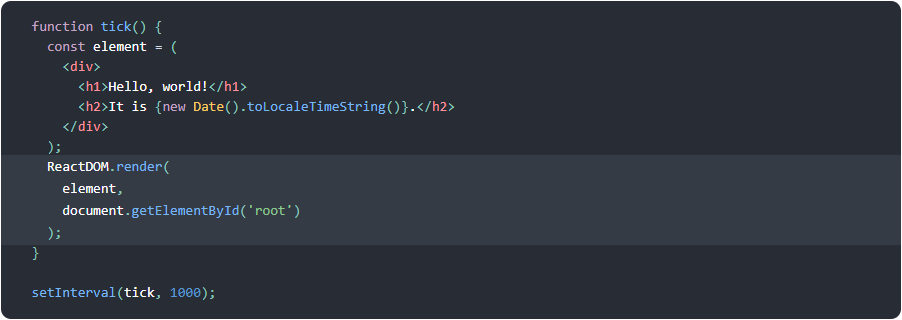

State and Lifecycle
This page introduces the concept of state and lifecycle in a React
component. You can find a detailed component API reference here.
Consider the ticking clock example from one of the previous
sections. In Rendering Elements, we have only learned one way to
update the UI. We call ReactDOM.render() to change the rendered
output:
